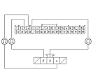
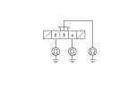
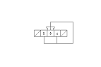
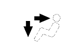

Climate Control-Navigation Communication Line Circuit Troubleshooting
Operate the climate control system in several modes.
Is the climate control system OK?
YES
-
Go to
Step 2
.
NO
-
Do the self-diagnostic with the HDS
or
climate control unit.
■
Do the Navi system link.
■
Is the Air-Con or TALK/BACK icon red?
YES
-
If Air-con icon is red, go to
Step 3
.
If TALK/BACK icon is red, go to ‘‘voice recognition does not work'' in the navigation system symptom troubleshooting.
■
NO
-
Go to
Step 9
.
Turn the ignition switch OFF.
Disconnect navigation unit connector F (5P).
Disconnect the climate control unit 36P connector.
Check for continuity between the following terminals of the climate control unit 36P connector and navigation unit connector F (5P).
36P:
5P:
No. 3
No. 2
No. 4
No. 4
No. 5
No. 3
Is there continuity?
YES
-
Go to
Step 7
.
NO
-
Repair any open in the wires between the climate control unit and the navigation unit.■

Check for continuity between body ground and navigation unit connector F (5P) terminals No. 2, 3, and 4 individually.
Is there continuity?
YES
-
Repair short to body ground in the wire(s) between the climate control unit and the navigation unit.■
NO
-
Go to
Step 8
.
Reconnect the climate control unit 36P connector.
Disconnect navigation unit connector F (5P).

Connect navigation unit connector F (5P) terminals No. 2, 3, and 4 with a jumper wire.
Turn the ignition switch ON (II).

Press and hold the AUTO and OFF buttons.
Does the VENT and HEAT indicator turn on?
YES
-
Do the Unit check with the navigation system .
■
NO
-
Substitute a known-good climate control unit, and recheck. If the symptom goes away, replace the original climate control unit .■
